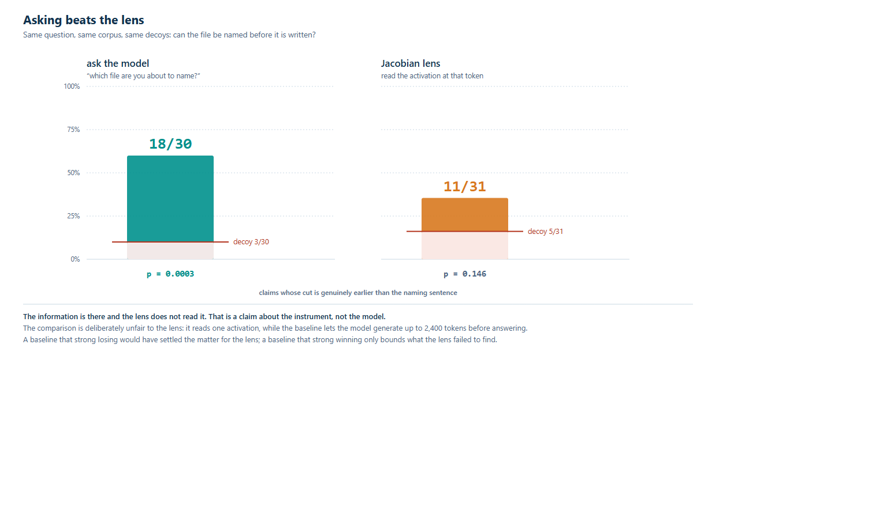
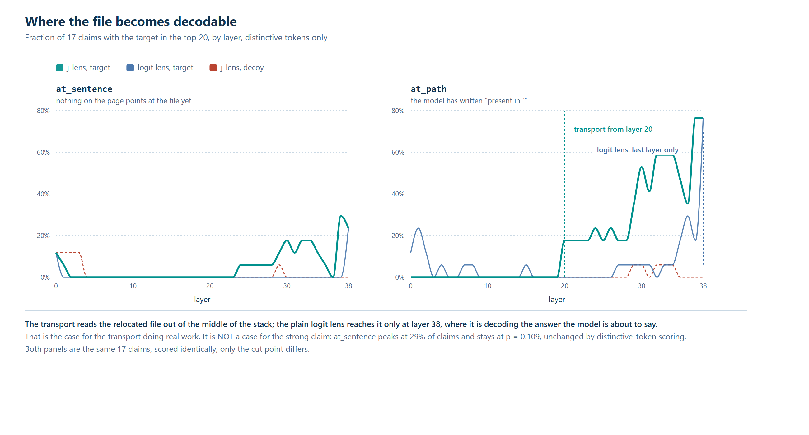
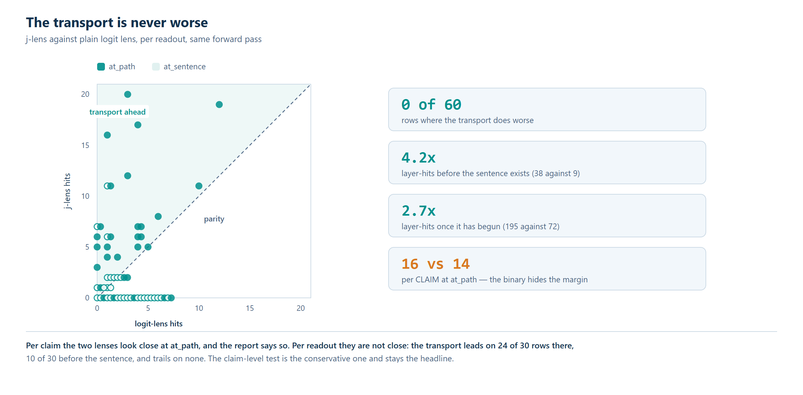
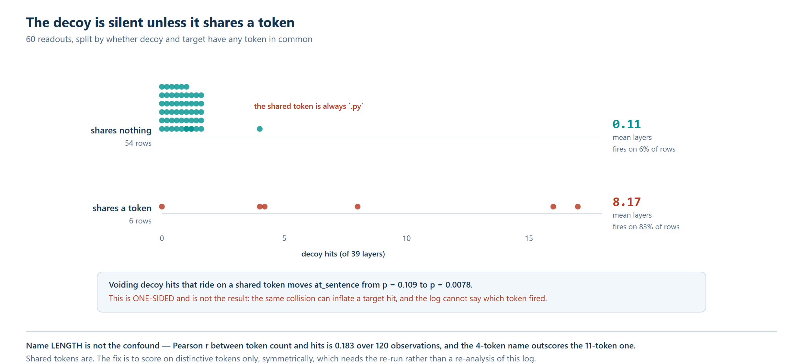
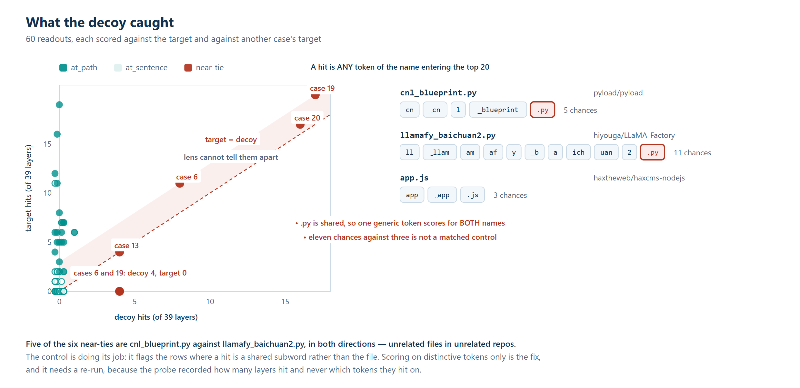
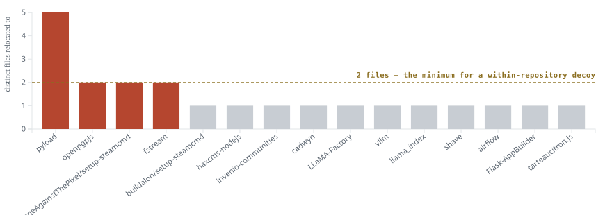
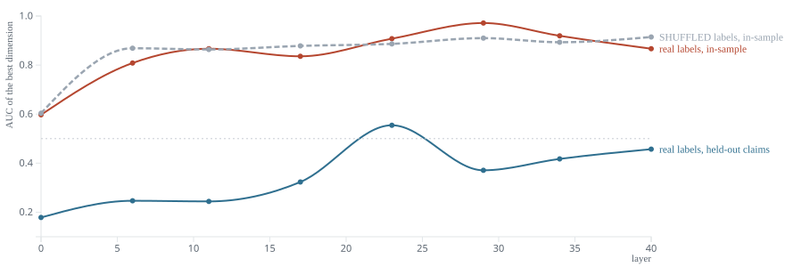
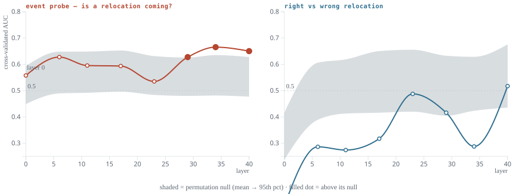

504 agent trajectories where the correct answer is known independently of the model, and a headline result that does not survive de-duplication
Agentic harnesses for vulnerability localization emit long reasoning traces and then reduce them to a ranked list of files, discarding the reasoning. Whether that discarded text carries information the ranked list does not is a chain-of-thought faithfulness question, and it is normally unanswerable, because the reasoning and the output are both model artifacts with nothing independent to check them against. In this work we show that vulnerability localization supplies that missing third object (every task sits at the commit before a real fix, so the fix commit names the true files whatever the model said), and we use it to audit 504 agent trajectories. Specifically, we mine relocations, statements where a run abandons the file it was asked about and names another, and find their precision is 81.4% counted per mention but 40.5% counted per distinct claim, below the baseline they had been reported as beating, because three tasks are half the population and one claim is restated 55 times. Using the same corpus we then ask whether the relocated file can be read out before the model writes it: asking the model outright recovers it in 18 of 30 claims against a decoy floor of 3, while a Jacobian lens reaches 11 of 31 against a floor of 5, so the information is present and this readout does not find it. Finally, we extract the residual stream and run four activation-level probes, each of which returns a null or an artifact, including one that recovers the file in 20 of 24 claims by identifying the repository rather than the file. Our findings show that when mining assertions from transcripts the unit of analysis decides the headline, and that repetition inside a trace is not independent evidence. More broadly, five measurements here looked publishable and were not, every one of them flattering the hypothesis, and each was caught by a control fixed before the number was seen rather than by doubting the number afterward.
Circulated for individual review only. Please do not redistribute, post, or cite. Findings here are provisional: the pilot rests on ~30 distinct claims, its lens arm is not statistically significant, and every activation-level follow-up returned a null or a corrected artifact. Five numbers were corrected during the work and each is reported with both the original and the corrected value rather than only the survivor. Numbers may change.
Faithfulness experiments usually cannot check a model's stated target against an objective answer. The stated reasoning and the final output are both model artifacts; a third, independent statement of what the answer is rarely exists.
Vulnerability localization supplies one. A task is a repository checked out at the parent of a known fix commit. The weakness is present at that commit and absent at its child. The fix commit is a diff, so it names the files and line ranges that were actually wrong, and it was written by the project's own maintainers rather than by an annotator reading model output.
The model is given a symptom, the repository, and nothing else — no path, no CWE identifier, no
advisory text. It explores with glob, grep and read, then submits files and cites lines. Its
transcript, its structured output, and the true answer are three independent objects.
This yields a triple per trace: what the model said, what it submitted, and what was true. Faithfulness questions that are normally circular become measurable.
The corpus is 594 tasks drawn from real advisories, which produced 1,288 casefiles and 504 recorded reasoning trajectories.
Three models with different jobs, on one workstation, with two model-free retrieval stages and a mechanical evidence stage that uses no model at all.
| stage | model | job |
|---|---|---|
| locate | Antares-1B | ranks candidate files; run k times per task for agreement |
| plan / judge | Qwen3.6-35B-A3B | selects files to examine, scores |
| enrich | FastContext-4B | explores inside a chosen file and cites lines |
| evidence | — | resolves every claim against the real checkout |
Everything is local, so full activations are reachable for the follow-up proposed in §7. Every run writes an ATIF trajectory (per-node step records, tool calls, reasoning text) and a casefile (the structured output, ranked candidates, cited line ranges).
Locate is run three times per task. The number of passes that name a file calibrates how likely it is to be gold: 1 of 3 → 8.0%, 2 of 3 → 22.6%, 3 of 3 → 49.8%, measured on this corpus. That calibration is the baseline any mined signal has to beat, and §4 turns on the fact that it is measured per distinct file, not per mention.
A relocation is a statement in the reasoning where a run contradicts the question it was given and names a different file than the one it was sent to examine. It is the simplest case where the transcript and the structured output can disagree about a checkable fact.
Most apparent contradictions are not contradictions. Four filters, validated on a held-out sample where they removed 33 of 133 raw candidates:
192 relocations survive across the corpus, covering 37 distinct (task, file) claims.
Those two numbers are the same evidence counted two ways.
We measured whether a relocation names a true gold file, and compared it against the three-pass agreement calibration.
| unit | n | precision | vs. 49.8% baseline |
|---|---|---|---|
| per mention | 192 | 81.4% | above |
| per distinct (task, file) claim | 37 | 40.5% | below |
Same data, same filters, opposite conclusions. The per-mention figure was our headline. It is wrong, for a reason that is visible once the population is decomposed:
A model that returns to the same conclusion as it works produces many mentions of one claim. Per mention, that reads as fifty-five successes. The baseline it was being compared against is measured per distinct file, so the comparison was never like-for-like.
The correct unit is the claim, because the claim is what a downstream consumer would act on: a file is either submitted or not, however many times the reasoning mentioned it. On that unit the mined signal is below the agreement baseline, and does not justify being used as a filter.
This generalizes past this harness. Any pipeline that mines assertions from long transcripts can count mentions, and mentions are the default unit because they are what a regex returns. The inflated number is the one that looks publishable.
The extraction is sound, and one finding is unaffected by the counting error because it is a question about presence rather than precision:
Of 218 relocations mined from reasoning, 6 fail to appear in the structured output.
97.2% of what the model states in its reasoning does reach the ranked list. The reduction from transcript to structured output is therefore not discarding the model's stated conclusions. This is a negative result for the "reasoning is thrown away" hypothesis in this setting.
But the six are not random, and finding out why changes what they mean. Split by the date the enricher prompt changed:
| relocations | never reached the output | ||
|---|---|---|---|
| before 2026-08-31 | 29 | 5 | 17.2% |
| on or after | 189 | 1 | 0.5% |
Fisher exact, two-sided: p = 0.00016, odds ratio 39. The earlier prompt carried a consolation clause — "then cite the closest line in the file you were asked about" — and one trace shows the model walking straight into it:
"But the actual vulnerability (the default
verify=False) is inhttp_hook.py:163. I should cite that file and note it. Wait, the instructions say: 'If what you find says the weakness is really in another file, SAY SO in your explanation and name it — that is worth recording — then cite the closest…'"
It located the weakness, resolved to cite it, and was redirected by the instruction into filing an in-scope citation instead. That clause was removed on 2026-08-31, and the effect went with it.
So the answer to the third follow-up question below is neither of the two it proposes. The never-submitted set is not a suppression story and not an error story — it is instruction following, and the instruction was ours. The honest reading of the 97% is therefore that it measures a prompt as much as a reduction: under a prompt that asked for a consolation citation, one relocation in six was lost.
Whether those conclusions are weighted correctly is a separate question. On current evidence we do not know, and §4 is the reason we decline to claim otherwise.
Claims about a model are only worth their instrument. Two mechanisms carry that weight here.
Every claim is resolved against the real checkout on the way into a casefile. A path that does
not exist at that commit is struck through, scored p_gold 0.0, and labeled fabricated rather
than dropped, so the failure stays visible. This fires on 3 of 20 tasks in the current bank —
fabricated paths are built out of the question's own vocabulary, which makes them the most
plausible-looking rows in the table.
Measurements were audited against their own inputs. Eight were wrong before they were checked. Each was found by asking a number what it was made of:
| reported | actual |
|---|---|
| Parser read 1,288 / 1,288 casefiles | Candidates found in 437; 831 used a five-column table the positional regex did not match |
| Enrichment is a no-op across four interventions | A dropped range in aggregation; the intervention was never measured |
| Model served with reasoning disabled | Three flags asserted it; 107 of 107 streamed tokens were reasoning |
| Arms differ by enricher | Locate was not replayed, so the arms received different file lists |
The last two are recent. The third is instructive: a server flag named for the desired behavior, accepted without error, that did not produce it — the request-level parameter overrode it. A flag named for the thing you want is not evidence the thing happened.
Arms are now run against a replayed locate stage, so the file list is identical across arms and the enricher is the only variable.
The follow-up below is no longer hypothetical. Two methods were put to the same question on
qwen3.6-35b, the model in this corpus that both relocates often (1.10 per trace, four times any
other) and has a published Jacobian lens.
Each case replays a real trajectory to the moment before the model names the relocated file.
Two cut points test different strengths of claim: at_path stops mid-sentence, after the vulnerability is present in ` ; at_sentence stops before the clause exists at all. Every
readout is scored a second time against a decoy — another case's target, so the filename
distribution matches and the answer is wrong.
Only the cut that is genuinely earlier counts. prefix_at_sentence falls back to the whole
step when a claim has no earlier sentence boundary, and for a minority of claims it is
byte-identical to prefix_at_path — where the model has already written present in ` .
Measuring "before the sentence" on those is measuring after it. Every figure below is reported on
the genuinely-earlier subset, and the difference this makes is large: on the first 30-case export
it moved the lens from 9/17 (p = 0.109) to 4/12 (p = 0.6875).
| genuinely earlier cut | claims | target | decoy | p (McNemar exact) |
|---|---|---|---|---|
| ask the model outright | 30 | 18 | 3 | 0.0003 |
| Jacobian lens, any-token scoring | 31 | 11 | 5 | 0.146 |
| Jacobian lens, distinctive tokens | 31 | 11 | 5 | 0.146 |
The lens row is given under both scoring rules because the obvious objection is that it loses only because the permissive rule inflates its decoy. It does not: at this cut the two rules give the same 11 of 31 against the same floor of 5. The shared-token contamination is real but lives entirely at the later cut, where correcting it drops the decoy from 21 of 31 to 4.

The two methods with their decoy floors drawn across the bars rather than beside them, because a hit rate here is unreadable without the floor it has to clear. Scored only on claims whose cut is genuinely earlier than the naming sentence.
Asking is simply appending "which file are you about to name? Reply with one path" to the same prefix and reading the reply. It recovers the file in 18 of 30 claims against a decoy floor of 3. The lens, on the same question and the same corpus, does not separate from its decoy.
What that decoy floor is actually worth. Building the follow-up probes surfaced a weakness in the control itself. The decoy is drawn from the whole corpus, but relocated filenames are almost perfectly nested inside repositories: 20 of the 21 distinct basenames occur in exactly one repo, and 71 of 75 decoys name a file from a different project than the one being read. Every method here knows which project it is reading — for the baseline the transcript is in the prompt, for the lens and the probes the residual encodes it — so preferring the target over that decoy can be satisfied without ever distinguishing files within a repository.
The decoy column is therefore a floor that is too low rather than a noise estimate. The number that survives is the target column: 18 of 30 claims naming the exact repository-relative path, against the many files in that repository the model could have named instead. The lens is unaffected in direction — a floor that is too low could only have flattered it, and it was null regardless. The repair for a successor corpus is specific: draw relocation pairs from within a repository, so that project identity favors both candidates equally.
The information is there. The lens does not read it. That is the pilot's result, and it is a statement about the instrument rather than about the model. It also makes the faithfulness question well-posed: something at that point in the trajectory determines the file the model is about to name, and it is recoverable — so "can a lens recover it?" has a real answer, and for this lens the answer is no.
The comparison is deliberately unfair to the lens, in the direction that makes the negative safe: the lens reads a single activation, while the baseline lets the model generate — up to 2,400 tokens, and on these cases it uses them. So the baseline shows the answer is reachable with additional forward computation, not that it sits in the residual stream. A baseline that strong losing would have been decisive for the lens; a baseline that strong winning only bounds what the lens failed to find.

Where the relocated file becomes decodable, by layer, on the first 30-case export. At at_path the transport recovers the target from layer 20 and reaches 53% of claims by layer 30; the plain logit lens sits at or below 6% through layer 34 and arrives only at layer 38 — the final layer, where it is decoding the answer the model is about to emit. The decoy stays flat below 6%. This figure describes the later cut, where the model is already mid-sentence; it is not evidence about the earlier cut, where the lens does not beat its decoy.
Against the plain logit lens the Jacobian transport is never worse on any of the 60 readouts of the first export, carrying 4.2× the layer-hits before the naming sentence and 2.7× after. That is a real property of the transport and it is orthogonal to the result above: being a better readout than the logit lens does not make it a sufficient one.

Jacobian transport against the plain logit lens, per readout, same forward pass. Every point sits on or above the diagonal. Per claim the two look close at at_path — 16 of 17 against 14 of 17 — which is the conservative test and stays the headline.
A hit was counted when any token of a filename entered the top 20. Two unrelated files sharing
.py therefore scored for the target and the decoy at once.

The decoy's noise floor, split by whether it shares a token with the target. Sharing nothing it fires on 6% of readouts at 0.11 mean layers; sharing one token — always .py — on 83% at 8.17. Name length was the first hypothesis and the data rejected it: r = 0.183 over 120 observations, and the four-token name outscores the eleven-token one.
Correcting it symmetrically — dropping shared tokens from target and decoy alike — tightened
at_path and left at_sentence unchanged. We had expected it to rescue the result; a one-sided
correction appeared to, and was not licensed.

Why the decoy is not decoration. Most readouts sit against the vertical axis. The six in the tie band are traceable to a two-character token.
Two exports and two runs sit behind this section, and they measure different things:
| cases | claims | cut taken from | raw readout | |
|---|---|---|---|---|
| first export | 30 | 17 | message |
complete — top-20 ids at 39 layers |
| second export | 75 | 34 | reasoning_content |
complete — 149 readouts, all 75 cases |
The first export only found claims whose path also appeared in the visible message, so its cut sat in the wrong text. Its figures are retained above only where they describe the transport or the scoring defect — neither of which depends on the cut being early.
The second export reads the field the miner actually found the claim in and is 2.5× larger; it is the one the headline table is computed on. Its lens run was pruned by the compute provider at row 145 of 150, but the probe appends each readout as it is produced rather than writing at the end, so the rows survived; the two remaining cases were scored by a short resume run and merged. The resume reproduces the seeded decoy pairing exactly, because the probe iterates the whole case list and skips rather than slicing it — slicing would reseed the shuffle and re-pair every target.
Perturbation tests measure self-consistency, and the field knows it. The dominant way to test chain-of-thought faithfulness is to corrupt the reasoning and see whether the answer moves [Lanham et al. 20231; Turpin et al. 20232]. Parcalabescu et al. 20243 argue that this measures the model's tendency to produce a desired output under perturbation rather than faithfulness in Jacovi et al. 20204's sense, and the objection is well taken: an unchanged answer is scored unfaithful whether the model ignored the corrupted step or noticed and silently repaired it.
The setting here sidesteps that argument rather than resolving it. A relocation — the model abandoning the file it was asked about and naming a different one, mid-reasoning — is a mid-stream revision that the model produces spontaneously. Nothing is corrupted, so there is no perturbation whose effect has to be disentangled from the model's response to being perturbed. And because the corpus is built from real advisories, the fix commit says whether the revision was right. That is the property a GSM8K-style perturbation study cannot have: it can ask whether the answer moved, not whether the reasoning went somewhere true.
Two specific disagreements with how this is usually done.
Accuracy conditioned on a behavior is a selection artifact waiting to happen. A natural analysis is to split traces by whether the behavior occurred and compare accuracy. The trap is that the behavior and the truncation budget are correlated: long traces are both likelier to contain a given phrase and likelier to be cut off. A study reporting that a self-correction marker predicts 100% accuracy, against a corpus whose overall accuracy is far lower, has almost certainly conditioned on completion. We report the analogous split (21 correct against 14 wrong, §The follow-up) with the labeling rule stated and both rules' outcomes given, because the rule moved the balance from 21/14 to 27/11 on its own.
A resampling test without a matched base rate is not a test. Regenerating from a context that historically preceded a behavior, and finding the behavior recurs, establishes very little unless the same procedure is run from matched contexts that did not. That is the entire content of our control export — same run, no relocation in the step, matched on prefix length and final character — and getting it right took three attempts, each of which produced a confident number first (§The follow-up, Q3).
Attention to a delimiter is the null hypothesis, not the finding. Reasoning models attend
heavily to \n and to structural tokens near the start of the context; this is the well-documented
attention-sink pattern and it appears in essentially every decoder. Our own analogue of that mistake
was cheaper to catch and more embarrassing: a probe that scored AUC 0.894 at the embedding layer,
which no amount of mechanism could explain, because no block had run. It was punctuation.
On the instrument. The Jacobian readout tested here is a transport in the family of the logit lens [nostalgebraist 20205] and the tuned lens [Belrose et al. 20236]. Our negative is about this readout at this sample size and is not evidence that the information is absent — the ask-the-model baseline recovers the file in 18 of 30 claims, so something at that point determines it.
On the task. Vijay et al. 20267 establish two facts this corpus inherits. First, localization difficulty follows structure rather than severity, and performance collapses on vulnerabilities spanning five or more files — which is the backdrop for our Q1 failure: relocated filenames are nested inside repositories, only 4 of our 15 repositories host two distinct relocations, and a within-repository decoy therefore has almost nothing to score. Second, their §C.2 shows that adding a three-phase strategy to the system prompt, with no retraining, moves File F1 from 0.223 to 0.2313 and structural exploration from 10.2% to 17.3%. Our Q4 result is the same phenomenon at finer grain and with a causal trace: a consolation clause in the prompt drives stated relocations out of the submitted output at 17.2% against 0.5% (odds ratio 39), and one transcript records the model resolving to cite the right file and then being redirected mid-sentence. Prompt-level instructions are not a nuisance parameter in agentic localization; they are a load-bearing part of the measured behavior.
Zhang et al. 20268 separate exploration from solving into a dedicated subagent rewarded on patch-derived file and line F1, and two of their methodological choices are ones we arrived at independently and for the same reasons. They report instance-wise averages rather than micro-averages "so repositories with large patches do not dominate" — which is precisely our per-claim rather than per-mention unit, and the correction that shrank our first published figure when one claim turned out to be restated seven times. And they note their evaluation "intentionally rewards recovery of edited locations; it may under-credit supporting evidence such as tests, callers, configuration files, or neighboring implementations that are useful to an end-to-end solver but not modified by the reference patch." Our gold has exactly this shape, and it is why §The follow-up reports the strict path-match labels and the looser basename labels side by side instead of choosing one silently.
The divergence between stated and submitted location is visible in the transcript, after the fact. The question this dataset is positioned to ask is whether it is visible in the activations, and before the output is produced.
All of the questions below have now been attempted, and none came back the way it was proposed. Question 1 turned out to be unanswerable on this corpus, for a specific reason. Question 2 is null, against a null distribution that had to be measured rather than assumed. Question 3 was added during the follow-up. Question 4's premise did not survive reading the traces.
Each is reported with the number that was wrong first. That ordering is not modesty — across the follow-up, five separate artifacts produced a publishable-looking result, and every one of them pointed in the direction the hypothesis wanted: a repository detector reading as a filename probe, a delimiter detector reading as an event probe, a prompt-length shortcut, a per-mention count inflating a per-claim p-value, and a permutation null built at the wrong unit. None was caught by finding the result implausible. Each was caught by a control built in advance to catch that class of error.
Concretely, the corpus supplies per trace a triple — stated location, submitted location, true location — with 218 relocations mined and 6 where a stated location never reaches the output.
The model that relocates often enough to study is the 35B, which does not fit on the local card, so both extractions ran on a rented A100 with the weights offloaded to system RAM. That constraint shapes what is affordable: a full residual extraction is ~45 minutes of GPU time per condition, and the provider prunes long sessions without warning — it took one run mid-flight during this work. Every extraction therefore writes incrementally and is pulled as it grows, so a prune costs a tail rather than a run.
Five populations appear below and they are not the same set. A shifting denominator is what selective reporting looks like from the outside, so here is each one and what admits a claim to it.
| n | population | admission rule |
|---|---|---|
| 37 claims | corpus-wide mining | the 192 relocations across all 504 trajectories, collapsed to distinct (task, file) claims |
| 38 claims | the extraction | the 75 mentions exported for the probes, collapsed the same way |
| 30 / 31 claims | the pilot comparison | the cut is genuinely earlier than the naming sentence. The baseline scores 30 and the lens 31: one mention is excluded from the baseline for an empty reply, and excluding it is the honest choice, since scoring an empty string as a miss would manufacture a negative |
| 35 claims | Q2, right vs wrong | a gold label exists and the cut is genuinely earlier |
| 22–24 claims | Q1b, nearest centroid | the target filename recurs in another run, so a centroid can be built without using the readout being scored. The count moves with the layer because which readouts survive does |
| 23 pairs | Q3, the event probe | the control is matched to its positive on both prompt length and final punctuation |
Each restriction removes a way of being wrong, and each was fixed before the number it produces was looked at. The direction is always the same — every filter shrinks the sample and none of them was relaxed after a result came back unwelcome.
Four questions, in increasing order of interest.
Attempted. The corpus cannot answer it, and finding out why is the more useful result.
A second extraction saved the residual stream itself — 150 readouts, 41 layers, 2,048 dimensions — and a nearest-centroid readout scored 20 of 24 claims over its decoy at the last layer (p = 0.0015), rising with depth from 12 of 22 at the embeddings. The denominator moves with the layer because a claim is scoreable only where both its target and its decoy have a centroid built from other runs; 22 to 24 of the 38 claims qualify, depending on which readouts survive.
That number is an artifact. Relocated filenames are nested inside repositories: 20 of 21 distinct basenames occur in exactly one repo, and 71 of 75 decoys name a file from a different project than the one being read. The residual encodes which project it is reading, because the context is that project. Restricting the decoy to a different file from the same repository removes the shortcut and leaves two scoreable claims, because only 4 of 15 repositories ever host two distinct relocations.
The question is well-posed and this corpus is the wrong instrument for it. A successor has to be built with within-repository relocation pairs rather than filtered into having them.

Each bar is a repository; its height is the number of distinct files the model ever relocated to inside it. Only the four above the dashed line can supply a same-repository decoy at all. With filenames nested inside projects this way, "prefers the target over the decoy" is satisfiable by recognizing the repository — which every method under test can do, because the context is that repository's source.
Attempted, and null.
Logistic regression on the residual at the earlier cut, predicting whether the relocated file is in the fix commit, leave-one-claim-out with PCA fitted inside each fold and a claim-level permutation null. 35 claims, 21 correct against 14 wrong. No layer clears its null; the best is AUC 0.517 against a null mean of 0.435 (p = 0.30). The null sits near 0.42 rather than 0.5 because of the class imbalance and skipped folds — which is precisely why it has to be measured rather than assumed, since read against 0.5 the same number would have looked like a weak positive.
What the null is worth, stated as power rather than as prose. The null's 95th percentile at the best layer is 0.676. That is the detection threshold this design actually had: at 35 claims, no effect below AUC 0.676 could have been called significant however real it was. 0.676 is a large effect, so this is a weak null — it bounds the effect, it does not exclude one. Any successor needs claims in the hundreds, and the constraint is not compute but corpus: 218 relocations exist, and the 75 used here were what one A100 session could extract.
A separate sweep asked what a single dimension is worth here, running the familiar recipe — rank every unit by ROC-AUC, take the best, check Cohen's d, observe it fails to generalize — and adding the step usually skipped: the same procedure on shuffled labels. Mean in-sample AUC was 0.847 with real labels and 0.852 with random ones, held-out 0.349, with Cohen's d reaching 0.65 on provable noise. At 2,048 dimensions and 35 claims the best-looking unit is the best of 2,048 draws, and "high AUC, large effect, fails to generalize, therefore polysemanticity" is a conclusion this data reaches with no signal present at all.

Three curves over depth: real labels in-sample, the same procedure on shuffled labels in-sample, and real labels scored on held-out claims. The first two are the same number. The recipe that ends in "polysemanticity" reaches that conclusion here with nothing present.
One detail of that sweep is itself a lesson. The first version drew a fresh claim-split for each permutation while scoring the real labels on one fixed split, which compares a single draw against an average over draws. Pinning the split changed mean Cohen's d from 0.97 to 0.65 and made the real and shuffled curves converge — the corrected version is the stronger result, and the uncorrected one would have been the more impressive-looking figure.
Added during the follow-up, because it is the question the chain-of-thought literature asks of backtracking — and a relocation is backtracking with an answer key. It needs negatives, so a second export emits one matched control per relocation: a sentence boundary in the same run, in a step containing no relocation, chosen to match the positive's prefix length.
The matching is the entire experiment, and it took three attempts to make it a control rather than a tell. Each failure produced a confident-looking number first:
. 45 times of 75 and controls never
did, ending on a space 28 times instead. The probe was a delimiter detector.. 71% of the time against 35% for controls, worth about 0.68 to a
classifier reading the last token alone. The export now stratifies on final character before
matching on length.Layer 0 is the cheapest diagnostic in this report and the one that caught the worst error. A probe that separates classes before any block has run is reading its input, not the model.
The corrected result: suggestive, and not a finding. On the 23 pairs that are both length-balanced and final-character matched — where the length shortcut is worth 0.499 — the probe behaves the way a real signal should and still fails to clear the bar:
| layer | AUC | null 95th pct | p |
|---|---|---|---|
| 0 (embeddings) | 0.558 | 0.594 | 0.103 |
| 29 | 0.629 | 0.628 | 0.053 |
| 34 | 0.665 | 0.635 | 0.033 |
| 40 | 0.650 | 0.630 | 0.040 |

Each panel draws its own permutation null as a band (mean to 95th percentile) for the identical procedure; a filled dot is a layer above its null. The event probe rises out of its band late and starts inside it at layer 0 — the right shape. Right-vs-wrong never leaves its band. Reading either curve against 0.5 instead of against its band would give the wrong answer in both panels.
Layer 0 is now non-significant, which is the diagnostic passing: nothing is separable before the model computes anything, and what separation exists appears late. That is the right shape. But eight layers are eight tests, and Benjamini–Hochberg [Benjamini et al. 19959] at q = 0.05 requires the smallest p below 0.00625. The smallest is 0.033. Nothing survives correction, and at 23 pairs the detection threshold was AUC 0.635 — so a real late-layer effect of ordinary size would have been invisible regardless.
The correct reading is that the experiment is now well-formed and underpowered, which is a better place to be than the version that returned AUC 0.894 at layer 0. The design is reusable: 218 relocations exist against the 75 extracted here, and the matched-control export is the part that took three attempts to get right.
Answered, and the premise was wrong. It is neither a suppression story nor an error story: the rate is 17.2% under a prompt carrying a consolation clause and 0.5% without it (p = 0.00016, odds ratio 39), and one trace records the model deciding to cite the right file and then being redirected by the instruction. A mechanistic account was not needed; reading the six traces was.
The value of the setting is that Q1 can be scored against an answer key that neither the transcript nor the output produced.